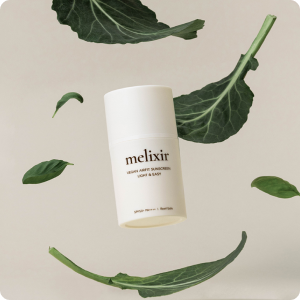

テーマ別観光名所
ビューティー/スパ
韓方
自然
ヒーリング/瞑想
地域別観光名所
ソウル特別市
京畿道
仁川広域市
江原道
慶尚北道/
大邱広域市
慶尚南道
忠清道
大田広域市
全羅道/
光州広域市
釜山広域市/
蔚山広域市
済州特別自治道
エディターおすすめの観光コース
ダブ's pick
ドヨン's pick
スヴ's pick
セン's pick
リム’s pick
関連機関
機関目録
LANGUAGE
한국어
ENGLISH
日本語
#ビューティー/スパ
ザ·スパアット·パラダイス
ザ·スパアット·パラダイスにはお客様のコンディションに合わせたプログラムが用意されており、 世界的に有名なスパブランドの製品と独自に開発した製品を使用し、テラピストの繊細で深みのある手つきでゆったりとくつろげます。 疲れた日常から抜け出して新しいエネルギーを探しているお客様に特別な経験をお届けします。
ホームページ :
http://thespa.co.kr
住所 : 仁川広域市中区永宗海岸南路321番キル186
電話番号 : 032-729-2440(2441)
#ビューティー/スパ
ザ·ベルスパ、ザ·プラザ店
ザ・ベルスパだけの特別なアロマテラピー、「シグネチャーブロンズアロマトリートメント」を受けることができます。 韓国で発展してきた青銅方字鍮器セラピー伝統技術に西洋のアロマオイルが結合され、セラピー効果を最大化します。
ホームページ :
http://www.hoteltheplaza.com/kr/facility/the_belle_spa.jsp
住所 : ソウル特別市中区小公路119プラザホテル別館15F
電話番号 : 0507-1418-7809

#ビューティー/スパ
メリクサー
メリクサーは韓国で初めて100%ビーガン化粧品を披露したブランドで、世界的な動物保護団体であるペタ(PETA,PeoplefortheEthicalTreatmentofAnimal)の認証を受けました。 メリクサーはAirbnbトリップで「ビーガンバスバーム作り」プログラムを実施することもありますが、参加者は化粧品にどんな成分が入るかを勉強し、自分の好みに合わせたバスボムを作ってみることができます。
ホームページ :
http://melixirskincare.com
住所 : ソウル特別市江南区狎鴎亭路42ギル49(新沙洞)1階、メリクサー
電話番号 : 02-6953-7373
#ビューティー/スパ
ビューティブルーバード
K-POPに劣らずグローバルトレンドをリードしているK-ビューティー。韓国化粧品や化粧法などが世界中の人々の関心をひき、セレブたちが訪れる場所に対する好奇心も高まっています。 その中でも清潭洞の「ビューティーブルーバード」はスーパージュニアのイトゥク、俳優ファン·ジョンウムなどが管理を受けたところとしてもよく知られているビューティースパです。
ホームページ :
http://btblvd.com
住所 : ソウル特別市江南区鶴洞路97ギル38ザハウス4階
電話番号 : 02-518-8066
1
2
3
4
5
6